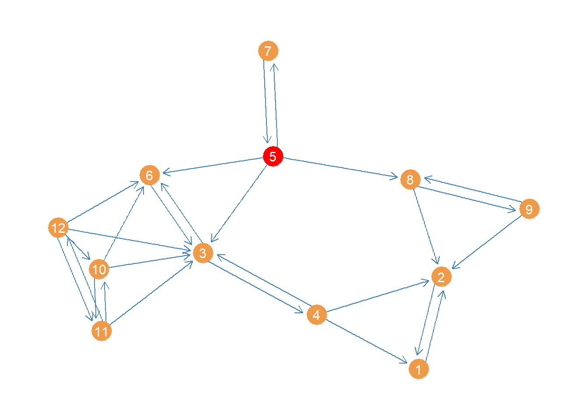
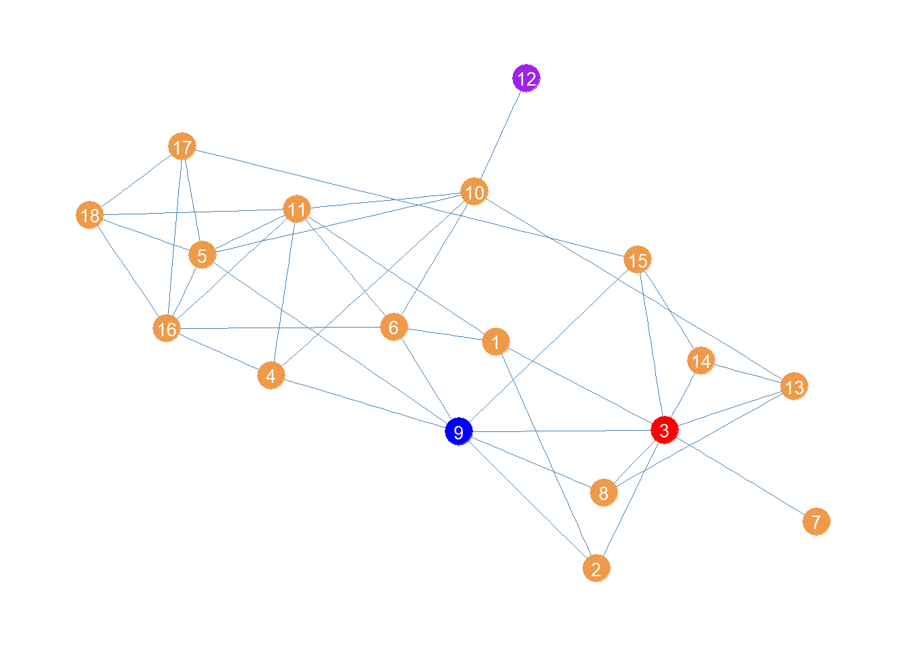

Closeness Centrality
The closeness centrality of a node in a graph is defined as the inverse of the sum of the lengths of shortest paths from each node to every other node. That means that to compute it, we first need to calculate the geodesic distance matrix (\(\mathbf{G}\)). This is matrix in which each entry \(g_{ij}\) records the length of the shortest path(s) between row node \(i\) and column node \(j\). Then, we sum the rows (or columns) of this symmetric matrix and then we obtain the inverse to get the closeness of each node:
\[ C^{CLO}_i = \left[\sum_{j \neq i}g_{ij}\right]^{-1} \]
Let’s see how this works. We first load our trusty Pulp Fiction data set from the networkdata package, which is an undirected graph of character scene co-appearances in the film:
Let us extract the geodesic distance matrix of the graph using the distances function in igraph:
Brett Buddy Butch Capt Koons Ed Sullivan English Dave Esmeralda
Brett 0 2 1 2 2 2 2
Buddy 2 0 2 2 2 2 3
Butch 1 2 0 1 2 1 1
Capt Koons 2 2 1 0 2 2 2
Ed Sullivan 2 2 2 2 0 2 3
English Dave 2 2 1 2 2 0 2
Esmeralda 2 3 1 2 3 2 0
Fabienne 1 3 1 2 3 2 2
Fourth Man 2 2 2 2 2 2 3
Gawker #2 2 3 1 2 3 2 2
Fabienne Fourth Man Gawker #2
Brett 1 2 2
Buddy 3 2 3
Butch 1 2 1
Capt Koons 2 2 2
Ed Sullivan 3 2 3
English Dave 2 2 2
Esmeralda 2 3 2
Fabienne 0 2 2
Fourth Man 2 0 3
Gawker #2 2 3 0Then we compute the closeness of each node like this:
Brett Buddy Butch Capt Koons Ed Sullivan
0.0137 0.0115 0.0167 0.0133 0.0115
English Dave Esmeralda Fabienne Fourth Man Gawker #2
0.0132 0.0104 0.0122 0.0116 0.0106
Honey Bunny Jimmie Jody Jules Lance
0.0130 0.0118 0.0118 0.0164 0.0118
Manager Marsellus Marvin Maynard Mia
0.0125 0.0143 0.0135 0.0109 0.0145
Mother Patron Pedestrian Preacher Pumpkin
0.0133 0.0125 0.0106 0.0116 0.0130
Raquel Roger Sportscaster #1 Sportscaster #2 The Gimp
0.0118 0.0135 0.0106 0.0077 0.0079
The Wolf Vincent Waitress Winston Woman
0.0118 0.0192 0.0091 0.0118 0.0133
Young Man Young Woman Zed
0.0091 0.0091 0.0079 Of course, we could have just used the available function in igraph and computed the closeness centrality directly from the graph object using the function closeness:
Brett Buddy Butch Capt Koons Ed Sullivan
0.0137 0.0115 0.0167 0.0133 0.0115
English Dave Esmeralda Fabienne Fourth Man Gawker #2
0.0132 0.0104 0.0122 0.0116 0.0106
Honey Bunny Jimmie Jody Jules Lance
0.0130 0.0118 0.0118 0.0164 0.0118
Manager Marsellus Marvin Maynard Mia
0.0125 0.0143 0.0135 0.0109 0.0145
Mother Patron Pedestrian Preacher Pumpkin
0.0133 0.0125 0.0106 0.0116 0.0130
Raquel Roger Sportscaster #1 Sportscaster #2 The Gimp
0.0118 0.0135 0.0106 0.0077 0.0079
The Wolf Vincent Waitress Winston Woman
0.0118 0.0192 0.0091 0.0118 0.0133
Young Man Young Woman Zed
0.0091 0.0091 0.0079 Once we have the closeness centrality values, we are naturally interested in who are the top nodes. The following code creates a table listing the top ten:
library(kableExtra)
close2 <- sort(close2, decreasing = TRUE)
close2 <- data.frame(close2[1:10])
kbl(close2, format = "pipe", align = c("l", "c"),
col.names = c("Character", "Closeness"), digits = 4,
caption = "Top Ten Closeness Characters in Pulp Fiction Network.") %>%
kable_styling(bootstrap_options = c("hover", "condensed", "responsive"))| Character | Closeness |
|---|---|
| Vincent | 0.0192 |
| Butch | 0.0167 |
| Jules | 0.0164 |
| Mia | 0.0145 |
| Marsellus | 0.0143 |
| Brett | 0.0137 |
| Marvin | 0.0135 |
| Roger | 0.0135 |
| Capt Koons | 0.0133 |
| Mother | 0.0133 |
It makes sense that the three main characters are also the ones that are at closest distances from everyone else!
Normalized Closeness
We can also compute the normalized closeness centrality which is given by:
\[ C^{NCLO}_i = \frac{N-1}{\sum_{j \neq i}g_{ij}} \]
Where \(N\) is the number of nodes in the network. The normalized closeness is just the inverse of the average distance of node \(i\) to the other nodes in the network.
In R this is just:
Brett Buddy Butch Capt Koons Ed Sullivan
0.5068 0.4253 0.6167 0.4933 0.4253
English Dave Esmeralda Fabienne Fourth Man Gawker #2
0.4868 0.3854 0.4512 0.4302 0.3936
Honey Bunny Jimmie Jody Jules Lance
0.4805 0.4353 0.4353 0.6066 0.4353
Manager Marsellus Marvin Maynard Mia
0.4625 0.5286 0.5000 0.4022 0.5362
Mother Patron Pedestrian Preacher Pumpkin
0.4933 0.4625 0.3936 0.4302 0.4805
Raquel Roger Sportscaster #1 Sportscaster #2 The Gimp
0.4353 0.5000 0.3936 0.2846 0.2913
The Wolf Vincent Waitress Winston Woman
0.4353 0.7115 0.3364 0.4353 0.4933
Young Man Young Woman Zed
0.3364 0.3364 0.2913 Which gives us the same result as using the igraph function with the argument normalized set to TRUE:
Brett Buddy Butch Capt Koons Ed Sullivan
0.5068 0.4253 0.6167 0.4933 0.4253
English Dave Esmeralda Fabienne Fourth Man Gawker #2
0.4868 0.3854 0.4512 0.4302 0.3936
Honey Bunny Jimmie Jody Jules Lance
0.4805 0.4353 0.4353 0.6066 0.4353
Manager Marsellus Marvin Maynard Mia
0.4625 0.5286 0.5000 0.4022 0.5362
Mother Patron Pedestrian Preacher Pumpkin
0.4933 0.4625 0.3936 0.4302 0.4805
Raquel Roger Sportscaster #1 Sportscaster #2 The Gimp
0.4353 0.5000 0.3936 0.2846 0.2913
The Wolf Vincent Waitress Winston Woman
0.4353 0.7115 0.3364 0.4353 0.4933
Young Man Young Woman Zed
0.3364 0.3364 0.2913 Computing the Geodesic Distance Matrix
As noted by Fouss, Saerens, and Shimbo (2016, 56, Algorithm 1.2) the geodesic distance matrix returned by the distances function in igraph can be computed by a relatively simple algorithm, a version of which goes like this.
First we define a “cost matrix” \(\mathbf{C}\) with entries \(c_{ij} = 1\) if nodes \(i\) and \(j\) are adjacent in the graph and \(g_{ij} = \infty\) if they are not (if \(i = j\) then \(c_{ij} = 0\)):
Brett Buddy Butch Capt Koons Ed Sullivan English Dave Esmeralda
Brett 0 Inf 1 Inf Inf Inf Inf
Buddy Inf 0 Inf Inf Inf Inf Inf
Butch 1 Inf 0 1 Inf 1 1
Capt Koons Inf Inf 1 0 Inf Inf Inf
Ed Sullivan Inf Inf Inf Inf 0 Inf Inf
English Dave Inf Inf 1 Inf Inf 0 Inf
Esmeralda Inf Inf 1 Inf Inf Inf 0
Fabienne 1 Inf 1 Inf Inf Inf Inf
Fourth Man Inf Inf Inf Inf Inf Inf Inf
Gawker #2 Inf Inf 1 Inf Inf Inf Inf
Fabienne Fourth Man Gawker #2
Brett 1 Inf Inf
Buddy Inf Inf Inf
Butch 1 Inf 1
Capt Koons Inf Inf Inf
Ed Sullivan Inf Inf Inf
English Dave Inf Inf Inf
Esmeralda Inf Inf Inf
Fabienne 0 Inf Inf
Fourth Man Inf 0 Inf
Gawker #2 Inf Inf 0Now, we loop through each node pair in the graph \(i\), \(j\), substituting the entries in the \(\mathbf{C}\) matrix with the following expression at each iteration \(k\):
\[ c^{(k)}_{ij} = min\left[c^{(k-1)}_{ij}, \left(c^{(k-1)}_{ik} + c^{(k-1)}_{kj}\right)\right] \]
We stop once none of the entries in \(\mathbf{C}\) are equal to Inf (in the case of a connected undirected graph).
Here’s a little R program that implements this idea:
And as we can see the entries in C are the same as those returned by distances:
Brett Buddy Butch Capt Koons Ed Sullivan English Dave Esmeralda
Brett 0 2 1 2 2 2 2
Buddy 2 0 2 2 2 2 3
Butch 1 2 0 1 2 1 1
Capt Koons 2 2 1 0 2 2 2
Ed Sullivan 2 2 2 2 0 2 4
English Dave 2 2 1 2 2 0 2
Esmeralda 2 3 1 2 4 2 0
Fabienne 1 3 1 2 3 2 2
Fourth Man 2 2 2 2 2 2 3
Gawker #2 2 3 1 2 3 2 2
Fabienne Fourth Man Gawker #2
Brett 1 2 2
Buddy 3 2 3
Butch 1 2 1
Capt Koons 2 2 2
Ed Sullivan 3 2 3
English Dave 2 2 2
Esmeralda 2 3 2
Fabienne 0 2 2
Fourth Man 2 0 3
Gawker #2 2 3 0 Brett Buddy Butch Capt Koons Ed Sullivan English Dave Esmeralda
Brett 0 2 1 2 2 2 2
Buddy 2 0 2 2 2 2 3
Butch 1 2 0 1 2 1 1
Capt Koons 2 2 1 0 2 2 2
Ed Sullivan 2 2 2 2 0 2 3
English Dave 2 2 1 2 2 0 2
Esmeralda 2 3 1 2 3 2 0
Fabienne 1 3 1 2 3 2 2
Fourth Man 2 2 2 2 2 2 3
Gawker #2 2 3 1 2 3 2 2
Fabienne Fourth Man Gawker #2
Brett 1 2 2
Buddy 3 2 3
Butch 1 2 1
Capt Koons 2 2 2
Ed Sullivan 3 2 3
English Dave 2 2 2
Esmeralda 2 3 2
Fabienne 0 2 2
Fourth Man 2 0 3
Gawker #2 2 3 0Closeness Centrality in Directed Graphs
What about closeness centrality for a directed network? Let us see how this works using a subgraph of the Lazega (2001) law_advice network, this time selecting just women under the age of forty:
This network is small enough that a plot could be informative about its structure. Let us plot it using the package ggraph, a visualization package that follows the same principles as the ggplot grammar of graphics but for network graphs (see here).
#install.packages("ggraph")
library(ggraph)
p <- ggraph(wg, layout = 'auto')
p <- p + geom_edge_parallel(color = "steelblue", edge_width = 0.5,
arrow = arrow(length = unit(2.5, 'mm')),
end_cap = circle(4, 'mm'),
sep = unit(3, 'mm'))
p <- p + geom_node_point(aes(x = x, y = y), size = 8, color = "tan2")
p <- p + geom_node_text(aes(label = 1:vcount(wg)), size = 4, color = "white")
p <- p + theme_graph()
p
Now a question we might ask is who has the greatest closeness centrality in this advice network. We could proceed as usual and compute the geodesic distances between actors:
1 2 3 4 5 6 7 8 9 10 11 12
1 0 1 2 1 3 3 4 2 2 3 3 3
2 1 0 2 1 2 3 3 1 1 3 3 3
3 2 2 0 1 1 1 2 2 3 1 1 1
4 1 1 1 0 2 2 3 2 2 2 2 2
5 3 2 1 2 0 1 1 1 2 2 2 2
6 3 3 1 2 1 0 2 2 3 1 2 1
7 4 3 2 3 1 2 0 2 3 3 3 3
8 2 1 2 2 1 2 2 0 1 3 3 3
9 2 1 3 2 2 3 3 1 0 4 4 4
10 3 3 1 2 2 1 3 3 4 0 1 1
11 3 3 1 2 2 2 3 3 4 1 0 1
12 3 3 1 2 2 1 3 3 4 1 1 0Note that this is not quite right. In igraph the default settings of the distance function treats the graph as undirected even though it is actually directed. So it doesn’t use the strict directed paths, but it just treats them all as semi-paths ignoring direction. That is why, for instance, it counts node 1 as being “adjacent” to node 4 even though there is only one incoming link from 4 to 1 and why the whole matrix is symmetric, when we know from just eyeballing the network that there is a lot of asymmetry in terms of who can reach who via directed paths.
To get the actual directed distance matrix, we need to specify the “mode” option, asking whether we want in or out paths. Here, we follow convention and select the out-paths:
1 2 3 4 5 6 7 8 9 10 11 12
1 0 1 Inf Inf Inf Inf Inf Inf Inf Inf Inf Inf
2 1 0 Inf Inf Inf Inf Inf Inf Inf Inf Inf Inf
3 2 2 0 1 Inf 1 Inf Inf Inf Inf Inf Inf
4 1 1 1 0 Inf 2 Inf Inf Inf Inf Inf Inf
5 3 2 1 2 0 1 1 1 2 Inf Inf Inf
6 3 3 1 2 Inf 0 Inf Inf Inf Inf Inf Inf
7 4 3 2 3 1 2 0 2 3 Inf Inf Inf
8 2 1 Inf Inf Inf Inf Inf 0 1 Inf Inf Inf
9 2 1 Inf Inf Inf Inf Inf 1 0 Inf Inf Inf
10 3 3 1 2 Inf 1 Inf Inf Inf 0 1 2
11 3 3 1 2 Inf 2 Inf Inf Inf 1 0 1
12 3 3 1 2 Inf 1 Inf Inf Inf 1 1 0This is better but introduces a problem. The directed graph is not strongly connected, so it means that some nodes cannot reach other ones via a directed path of any length. That means that the geodesic distances from a node to an unreachable node is coded as “infinite” (Inf). The problem with infinity is that it gets in the way of calculating sums of distances, a requirement for the closeness centrality.
1 2 3 4 5 6 7 8 9 10 11 12
Inf Inf Inf Inf Inf Inf Inf Inf Inf Inf Inf Inf Adding infinity to a number just returns infinity so all the rows with at least one Inf in the distance matrix get an Inf for the row sum. In this case that’s all of them. A bummer.
Harmonic Centrality
But dont’ worry there’s a patch. It is called the harmonic centrality (Rochat 2009).1 This is a variation on the closeness centrality that works whether you are working with connected or disconnected graphs (or in the case of directed graphs regardless of whether the graph is strongly or weakly connected), and therefore regardless of whether the geodesic distance matrix contains Infs.2
The main difference between the harmonic and regular closeness centrality is that instead of calculating the inverse of the sum of the distances for each node, we calculate the sum of the inverses:
\[ C^{HC}_i = \sum_{j \neq i}(g_{ij})^{-1} \]
And the normalized version:
\[ C^{NHC}_i = \frac{\sum_{j \neq i}(g_{ij})^{-1}}{N-1} \]
In R we can do this as follows. First, let’s compute the inverse of the entries of the geodesic distance matrix:
1 2 3 4 5 6 7 8 9 10 11 12
1 0.000 1.000 0.0 0.000 0 0.0 0 0.0 0.000 0 0 0.0
2 1.000 0.000 0.0 0.000 0 0.0 0 0.0 0.000 0 0 0.0
3 0.500 0.500 0.0 1.000 0 1.0 0 0.0 0.000 0 0 0.0
4 1.000 1.000 1.0 0.000 0 0.5 0 0.0 0.000 0 0 0.0
5 0.333 0.500 1.0 0.500 0 1.0 1 1.0 0.500 0 0 0.0
6 0.333 0.333 1.0 0.500 0 0.0 0 0.0 0.000 0 0 0.0
7 0.250 0.333 0.5 0.333 1 0.5 0 0.5 0.333 0 0 0.0
8 0.500 1.000 0.0 0.000 0 0.0 0 0.0 1.000 0 0 0.0
9 0.500 1.000 0.0 0.000 0 0.0 0 1.0 0.000 0 0 0.0
10 0.333 0.333 1.0 0.500 0 1.0 0 0.0 0.000 0 1 0.5
11 0.333 0.333 1.0 0.500 0 0.5 0 0.0 0.000 1 0 1.0
12 0.333 0.333 1.0 0.500 0 1.0 0 0.0 0.000 1 1 0.0Note that in this matrix of inverse distances, the closest (adjacent) nodes get the maximum score of one, and nodes farther apart when smaller scores (approaching zero). More importantly, those pesky Infs disappear (!) because unreachable directed pairs of nodes get the lowest score, corresponding to \(1/\infty = 0\). Turns out the mathematics of infinity weren’t our enemy after all.
Also note that the reachability relation expressed in this matrix is asymmetric: So node 4 can reach node 1 (there is a directed tie from 4 to 1), but node 1 cannot reach 4. This is precisely what we want.
Once we have this matrix of inverse distances, we can then we can compute the normalized harmonic centrality the same way as regular closeness by adding up the row scores for each node and dividing by the number of nodes minus one:
1 2 3 4 5 6 7 8 9 10 11
0.0909 0.0909 0.2727 0.3182 0.5303 0.1970 0.3409 0.2273 0.2273 0.4242 0.4242
12
0.4697 We can see that the highest harmonic closeness centrality node is 5, followed by 12. Here’s a plot of the network highlighting the highest harmonic centrality node.
col <- rep("tan2", vcount(wg)) #creating node color vector
col[which(close4 == max(close4))] <- "red" #changing color of max centrality node to red
p <- p + geom_node_point(aes(x = x, y = y), size = 8, color = col)
p <- p + geom_node_text(aes(label = 1:vcount(wg)), size = 4, color = "white")
p
Of course, igraph has a built in function to calculate the harmonic centrality called (you guessed it) harmonic_centrality:
1 2 3 4 5 6 7 8 9 10 11
0.0909 0.0909 0.2727 0.3182 0.5303 0.1970 0.3409 0.2273 0.2273 0.4242 0.4242
12
0.4697 Which gives us the same results (note we set the argument normalized to TRUE to get the normalized scores).
Generalized Harmonic Centrality
Agneessens, Borgatti, and Everett (2017) propose a “generalized” version of the harmonic centrality that yields plain old degree centrality and the regular harmonic centrality as special cases. The key is to introduce a parameter \(\delta\) governing how much weight we give to shortest paths based on distance. Let’s see how this works.
Recall that (the normalized version of) the harmonic centrality we defined earlier is given by:
\[ C^{NHC}_i = \frac{\sum_{j \neq i}(g_{ij})^{-1}}{N-1} \]
For any node \(i\), where \(g_{ij}\) is the geodesic distance between \(i\) and every other node in the graph \(j\), which could be “infinite” if there is no path linking them.
Agneessens et al’s tweak is to instead compute:
\[ C^{GHC}_i = \frac{\sum_{j \neq i}(g_{ij})^{-\delta}}{N-1} \]
Where \(\delta\) is a free parameter chosen by the researcher with the restriction that \(\delta \geq 0\) (if you want to calculate a closeness measure as we will see below).
When \(\delta = \infty\) the numerator element \(1/(g_{ij})^{\infty} = 1\) only when nodes are adjacent and \(g_{ij} = 1\) (because \(1^{\infty} = 1\)); otherwise, for \(g_{ij} > 1\) then \(1/(g_{ij})^{\infty} = 0\), and therefore the generalized harmonic centrality just becomes a (normalized) version of degree centrality. Alternatively, when \(\delta = 1\) we just get the plain old harmonic centrality we defined earlier.
The interesting cases come from \(1 > \delta < \infty\) and \(0 > \delta < 1\). In the first case, nodes at shorter distances are weighted more (like in the standard harmonic centrality measure) as \(\delta\) becomes bigger and bigger then the generalized harmonic centrality approximates degree. For values below one, as \(\delta\) approaches zero, then indirect connections to nodes of greater length are discounted less, and thus count for “more” in defining your generalized harmonic centrality score.
Let us see a real-world example of the generalized harmonic centrality in action:
First, we create a custom function to compute the generalized harmonic centrality:
Second, we compute three versions of the harmonic centrality, with \(\delta = 5\), \(\delta = 0.05\), and \(\delta = -5\), using the full (unrestricted by age) subgraph of the law_advice network composed of the women lawyers at the firm, with relations constrained to be undirected:
The first version of the harmonic centrality in line 5, with a positive value of \(\delta\) above zero, will compute centrality scores emphasizing direct (one-step) connections, thus coming closer to degree.
The second version, in line 6, with a value of \(\delta\) close to zero, will give comparatively more emphasis to indirect connections weighing longer paths almost as much as shorter paths (but always a little less), thus being more similar to closeness centrality.
Finally, the last version, in line 7, with \(\delta < 0\), will weigh longer paths more than shorter ones, serving as a measure of eccentricity (farness from others) not closeness.

Above is a plot of the women lawyers network showing the top node for each of the centralities:
In red we have node 3 who has the largest degree (\(k(3) = 8\)) and thus comes out on top using the generalized harmonic centrality version emphasizing direct connections (\(\delta > 1\)).
Then in blue we have node 9 who can reach the most others via the shortest paths, and thus comes out on top when the generalized harmonic centrality emphasizes indirect connectivity.
Finally, in purple we have node 12, which is farthest from everyone else, and thus comes out on “top” when longer indirect connections count for more (\(\delta < 0)\).
As we said earlier, both regular harmonic centrality and degree are special cases of the generalized measure. We can check this by setting \(\delta\) to either one or infinity.
When we set \(\delta=1\) the generalized harmonic centrality is the same as the normalized harmonic centrality:
[1] 0.598 0.534 0.706 0.598 0.657 0.627 0.426 0.539 0.696 0.647 0.667 0.407
[13] 0.588 0.520 0.583 0.603 0.559 0.544 [1] 0.598 0.534 0.706 0.598 0.657 0.627 0.426 0.539 0.696 0.647 0.667 0.407
[13] 0.588 0.520 0.583 0.603 0.559 0.544When we set \(\delta=\infty\) the generalized harmonic centrality is the same as the normalized degree centrality:
[1] 0.235 0.176 0.471 0.235 0.353 0.294 0.059 0.176 0.412 0.353 0.412 0.059
[13] 0.235 0.176 0.235 0.353 0.235 0.235 [1] 0.235 0.176 0.471 0.235 0.353 0.294 0.059 0.176 0.412 0.353 0.412 0.059
[13] 0.235 0.176 0.235 0.353 0.235 0.235Computing the Geodesic Distance Matrix
Footnotes
Agneessens, Borgatti, and Everett (2017) call the harmonic centrality “reciprocal closeness”↩︎
Some people (Boldi and Vigna 2014) claim that the harmonic centrality is the only centrality measure that could be called by that name from a purely axiomatic mathematical approach, but that’s a different story.↩︎